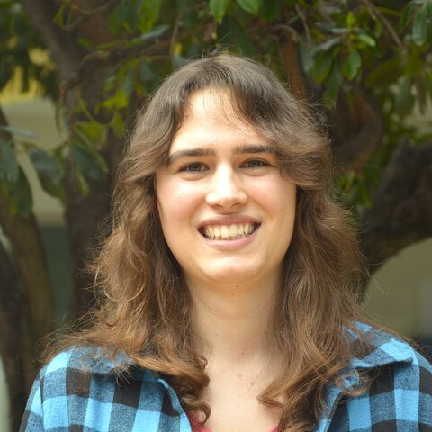

Artemis Llabrés
PhD student · Computer Vision Center (CVC), Universitat Autònoma de Barcelona
I am part of the Vision, Language, and Reading Group, where I research multimodal models for document understanding.
My work focuses on large-scale training of vision-language models (VLMs), agentic AI systems that can reason and act over complex documents, and efficient VLMs for long-context document understanding, making it possible to process multi-page documents and large collections without prohibitive compute costs.
- ICDAR 2026 Competition on Multimodal Reasoning over Documents in Multiple Domains International Conference on Document Analysis and Recognition (ICDAR), 2026 Oral [Paper] [arXiv]
- AdaNav: Query-Adaptive Multi-granularity Navigation for Long Document Understanding International Conference on Document Analysis and Recognition (ICDAR), 2026 Oral [Paper]
- Strategic Navigation or Stochastic Search? How Agents and Humans Reason Over Document Collections International Conference on Machine Learning (ICML), 2026 Oral [ICML] [arXiv]
- CoSMo: A Multimodal Transformer for Page Stream Segmentation in Comic Books IEEE/CVF International Conference on Computer Vision Workshops (ICCVW), 2025 [Paper] [arXiv]
- Enhancing Document VQA Models via Retrieval-Augmented Generation International Conference on Document Analysis and Recognition (ICDAR), 2025 [Paper] [arXiv]
- ComicsPAP: Understanding Comic Strips by Picking the Correct Panel International Conference on Document Analysis and Recognition (ICDAR), 2025 Oral [Paper] [arXiv]
- One Missing Piece in Vision and Language: A Survey on Comics Understanding arXiv preprint, 2024 [arXiv]
- Image-Text Matching for Large-Scale Book Collections International Workshop on Document Analysis Systems (DAS), 2024 Best Student Paper [Paper] [arXiv]
- Retrieval Augmented Verification for Zero-Shot Detection of Multimodal Disinformation arXiv preprint, 2024 [arXiv]
- ICDAR 2026 Competition on Multimodal Reasoning over Documents in Multiple Domains International Conference on Document Analysis and Recognition (ICDAR), 2026 Competition [Website]
- 6th IAPR TC10/TC11 Summer School on Document Analysis Vall de Núria, Catalonia, May 2026 School [Website]
- ComIQ Workshop IEEE/CVF International Conference on Computer Vision (ICCV), 2025 Workshop [Website]